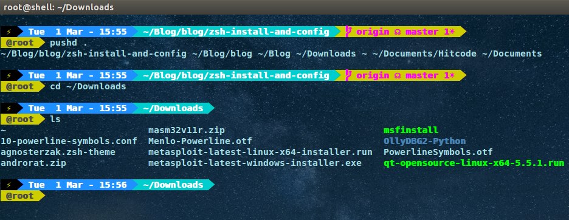

Update 2016-04-04 Mon 10:45 PM
ZSH Shell太慢了,难以忍受,已卸载(卸载完后,系统各种问题...于是重装系统..悲剧).
环境:
Ubuntu 14.04 x64

#1.安装ZSH
安装:apt-get install zsh
设置为默认shell:chsh -s $(which zsh)
登出并再次登入,查看默认shell: echo $SHELL
查看zsh版本: zsh --version
P.S.配置文件位于~/.zshrc
#2.安装oh my zsh
curl方式:
sh -c "$(curl -fsSL https://raw.github.com/robbyrussell/oh-my-zsh/master/tools/install.sh)"
wget方式:
sh -c "$(wget https://raw.github.com/robbyrussell/oh-my-zsh/master/tools/install.sh -O -)"
安装完之后,目录位于:~/.oh-my-zsh/,其下含有plugins,themes等目录
#3.环境变量配置
vim /etc/profile
最后一行写入:
export TERM="screen-256color"
#4.安装字体
git clone https://github.com/powerline/fonts.git /opt/powerline-fonts
cd powerline-fonts
./install.sh
然后进入shell的首选参数设置中选择一个powerline的字体,比如我这里选择Dejavu Sans Mono for Powerline,注意如果字体选择不对,将会影响显示.
打开终端测试字体:
echo "\ue0b0 \u00b1 \ue0a0 \u27a6 \u2718 \u26a1 \u2699"
#5.设置zsh主题
zsh的所有主题截图地址:https://github.com/robbyrussell/oh-my-zsh/wiki/themes,我这里自定义安装的主题位于:https://github.com/zakaziko99/agnosterzak-ohmyzsh-theme,
安装方法如下:
wget https://raw.githubusercontent.com/zakaziko99/agnosterzak-ohmyzsh-theme/master/agnosterzak.zsh-theme
mv agnosterzak.zsh-theme ~/.oh-my-zsh/themes
修改.zshrc中的ZSH_THEME为agnoster,即ZSH_THEME="agnoster"
对于本主题,我修改了一个着色的地方:
# Context: user@hostname (who am I and where am I)
prompt_context() {
if [[ -n "$SSH_CLIENT" ]]; then
prompt_segment magenta white "$fg_bold[white]%(!.%{%F{white}%}.)$USER@%m$fg_no_bold[white]"
else
prompt_segment yellow magenta "$fg_bold[magenta]%(!.%{%F{black}%}.)@$USER$fg_no_bold[magenta]"
fi
}
参考:https://github.com/robbyrussell/oh-my-zsh/wiki/Installing-ZSH